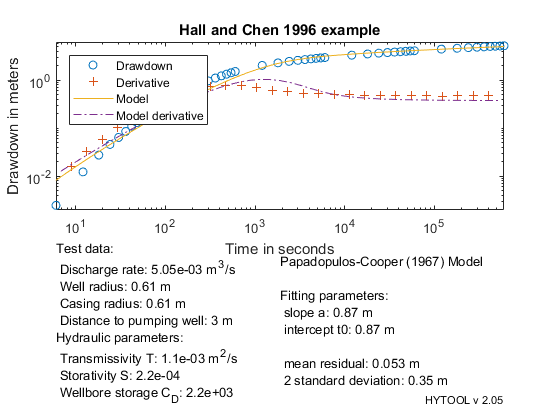

Dradown in the aquifer - one single storativity.
This demonstrates the interpretation of a Drawdown in the aquifer with well-bore storage effect with Papadopulos and Cooper (1967) solution
MIT License Copyright (c) 2017 Philippe Renard - University of Neuchâtel (CHYN)
Contents
Data preparation
The data set for this example comes from the following reference: HALL P., CHEN J., 1996. Water well and aquifer test analysis. Water Resources Publications, LLC, 412 pp. The test data are published on page 171-174.
Let us first load the data set and initialize the pda function.
[t,s]=ldf('pca_ds1.dat');
| HYTOOL Demo |
Interpretation
The interpretation follows the usual techniques in hytool with the guess of the parameters, non linear fit, and reporting.
We obtain a relatively poor fit to the data both at early and late time indicating that the model of Papadopulos-Cooper (1967) cannot explain well the observations.
The parameters that we get are: T = 1.1 e-3 m2/s and S = 2.2 e-4
p0=pca_gss(t,s); p=fit('pca',p0,t,s); pca_rpt(p,t,s,'Hall and Chen 1996 example');
Norm of Norm of
Iteration SSE Gradient Step
-----------------------------------------------------------
0 2.40827
1 1.51955 5.1792 0.141641
2 1.50032 2.66495 0.285746
3 1.49666 0.0248769 0.117733
4 1.49637 0.0739349 0.057564
5 1.49637 0.0580308 5.85027e-07
6 1.49637 0.0611817 6.14162e-17
Iterations terminated: relative norm of the current step is less than OPTIONS.TolX
 Comparison with Hall and Chen (1996)
Hall and Chen (1996) analyze the same data but they relax the definition of the well bore storage coefficient and estimate it independtly from the estimation of the storativity. This leads to a local storativity around the well different from the aquifer storativity. They obtain:
alpha = 0.01 which is equivalent to Cd = 50 T = 7.97E-04 S = 2.9E-03 (late time asymptote) S2 = 1.0E-02 (estimated from CD)
We interpret also the same data with the method of Hall and Chen in pcb_dmo.